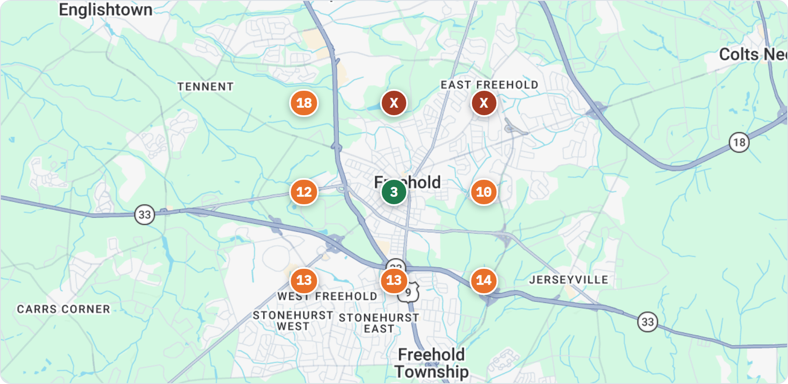
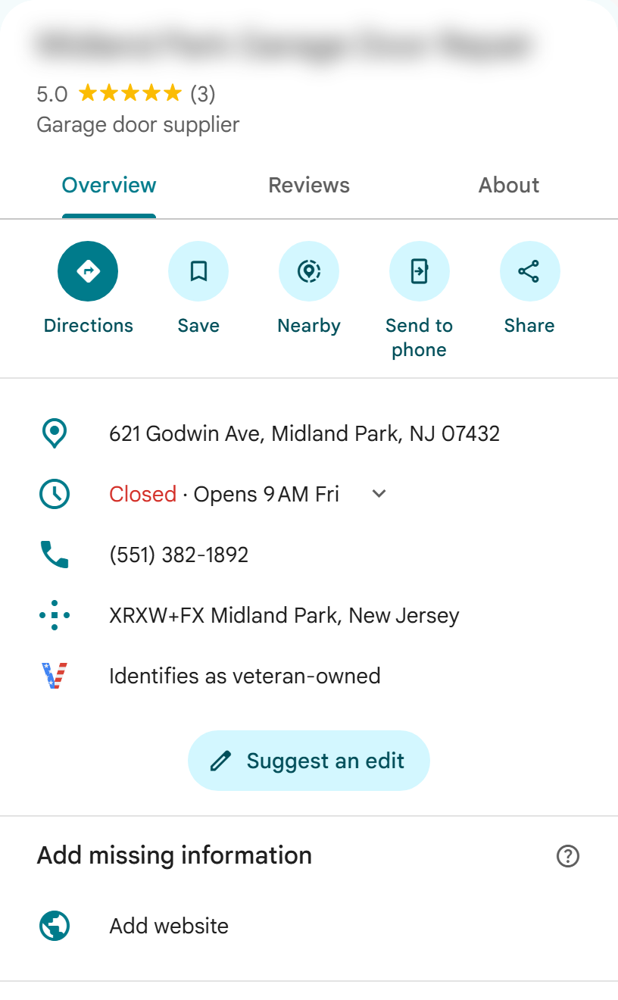
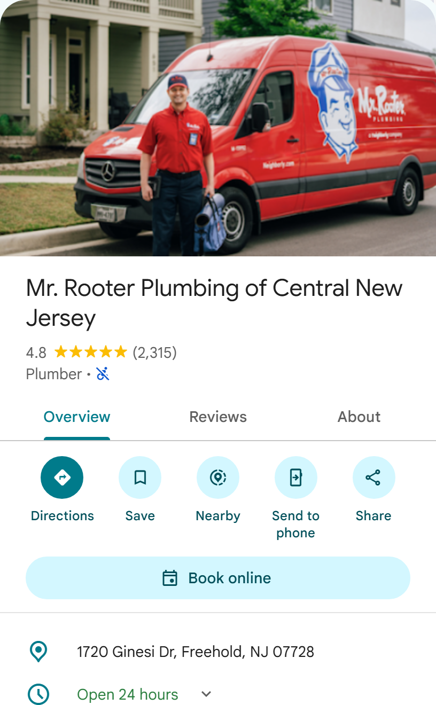
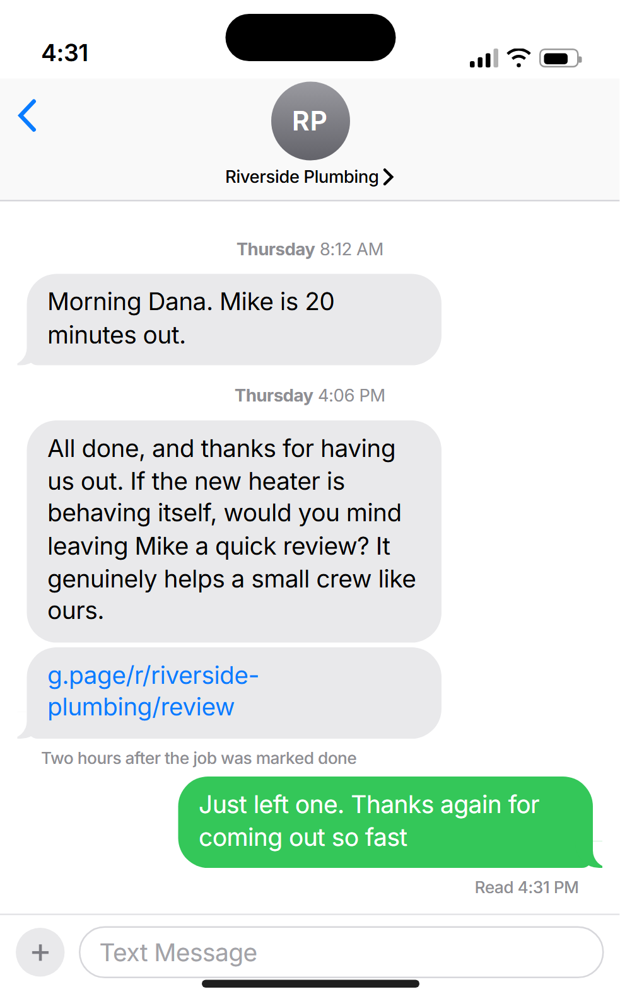
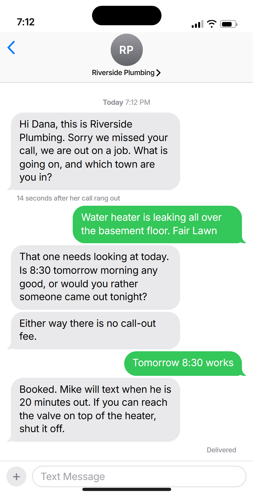
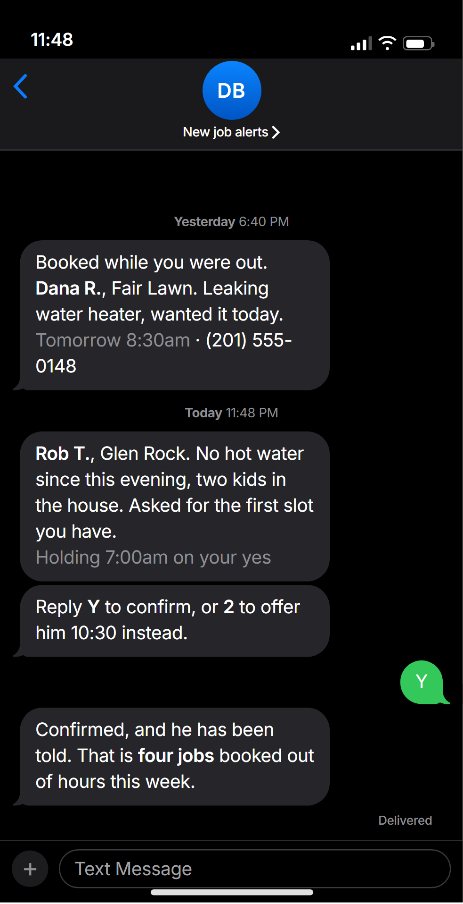

Growth Blueprint
Your report showed you where the work is going. This shows you what to do about it.
Every company beating you locally does these three well, whether they meant to or not. None of it is clever. It just has to happen every day, which is the part that breaks.
The whole thing on one page
The other ninety-four do not vanish. They leak out in three specific places, and each place has a name.
Round numbers, to show the shape. What matters is where the losses sit: most of the work is gone before anybody has spoken to you.
Which is why the order matters. Paying for more searches while nobody answers the phone is paying for the same leak twice.
Get found
Where you come up depends on where the person searching is standing. You only ever search from your own address, where you look fine.

How to read it. One company, one search, nine places a homeowner might be standing when they make it. Each circle is one of those places, and the number in it is where this company came up in the results.
Green: in the top three
Only at its own address. This is the one it can see itself.
Orange: tenth to eighteenth
On the map, but four pages down. Nobody scrolls that far.
Red X: not there at all
Two towns it happily drives to, where it does not exist.
Twelfth is not a slightly worse month. It is no calls at all from that neighbourhood. Your report has this same map for your own business.
Get found
Two real listings, photographed from Google. Same state, same kind of trade, same homeowner choosing between them.


A homeowner decides between those two in about four seconds. Google reads the same fields to decide who to put on the map in the first place.
Real businesses, so the name on the left is blurred. Nothing else is changed.
Get chosen

What she gets. The same thread that told her the van was twenty minutes out, now asking for a review, with the link right there to tap.
A link in their hand while they are still pleased gets written. The same ask on Monday does not.
So it goes out on its own, a couple of hours after you close the job, in your name. And it asks everyone, which is the part that changes the number.
Catch the job
Somebody with a leak tonight rings three companies and hires whoever gets back first. Not the cheapest. The first.

Her phone. Her call rang out, and fourteen seconds later she is being asked what is wrong. Four messages later the job is booked and she has been told to shut the valve.

Your phone. Quarter to midnight. The name, the town, the problem and the time, already asked for. One letter to confirm it.
Behind it, an assistant picks up the calls you cannot, and says so up front. Quotes that go quiet get chased until you have a yes or a no.
Where to start
If you only do one of these, do the first.
Stop the leak
Answer every missed call and form with a text, in seconds. It works on the enquiries you already have, so you can tell within a fortnight whether any of this is worth your time.
Start asking for reviews
Next, because it needs months to compound. Every week you wait is a week of finished jobs you cannot get back. Then finish the listing, which feeds the same result.
Then turn up the volume
Website and ads last. Sending more people at a business that catches what it earns is worth doing. Sending them at one that does not is the same leak, twice.
Every fix in here is one you could do yourself, with a free Google account and enough evenings. What we sell is that it keeps happening on the weeks you are flat out, which is exactly when it stops.
Reply to the text we sent. We will tell you what we would fix first and roughly what it takes. If it is not for you, no harm done, and the report and this plan are yours either way.